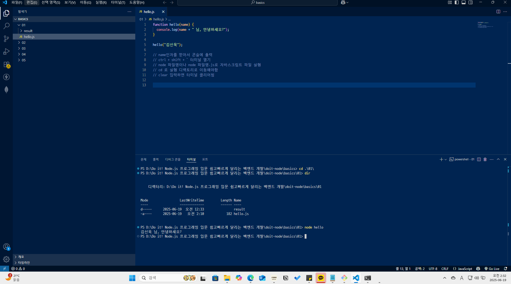
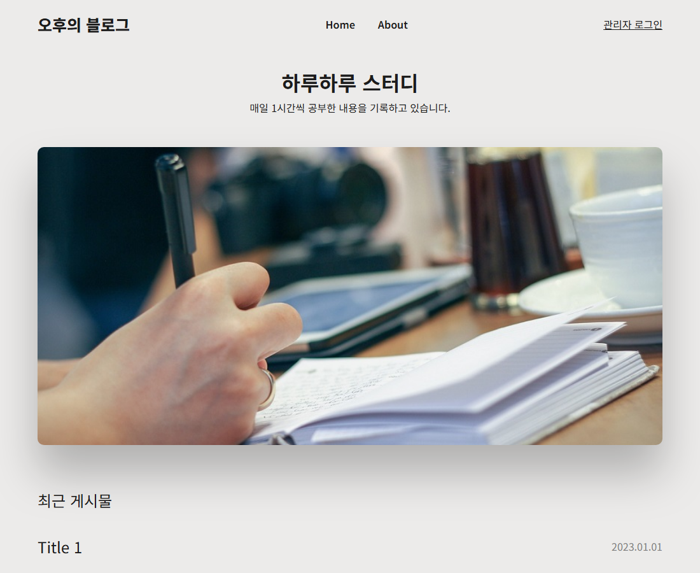
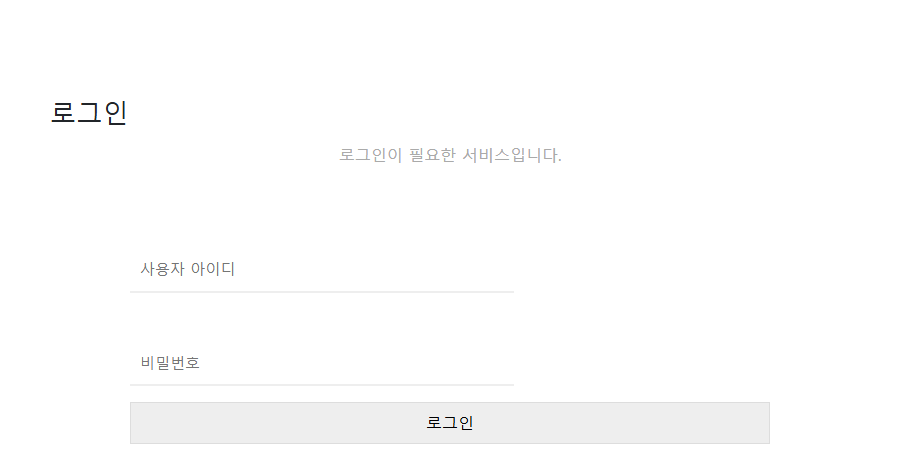

PROJ_07 · 완료 2025년 7월 6일 오후 11:48
하루하루 스터디
『Do it! Node.js 프로그래밍 입문』 폴더의 블로그 앱입니다. Express, MongoDB, EJS로 글 목록과 관리자 화면을 만들었습니다. 아래 첫 화면은 2026년 10월 17일에 레이아웃 파일을 브라우저에서 연 것입니다. 같은 날 앱을 켜자 MongoDB Atlas 주소의 DNS 조회가 거부되어, 데이터베이스의 글 목록은 뜨지 않았습니다.
추가 학습 자료
PROJ_07_add_doc은 1일차부터 15일차 기록과 스크린샷, 영상 강의 요약입니다. 강의 본문은 옮기지 않고, 일차별 주제만 모았습니다. 유튜브 강의 요약을 정리할 때 뤼튼을 사용했습니다.
-
1–5일차
클라이언트와 서버, HTTP, Node.js와 npm, ES6의 화살표 함수와 콜백·프로미스·async/await, path와 파일 시스템, http 모듈로 서버 만들기, 블로킹과 논블로킹, 콜스택과 libuv입니다.
-
6–9일차
Express의 라우팅, 미들웨어, 요청·응답 객체, 라우터 파일로 나누기, MongoDB와 NoSQL, REST에서 자원 이름을 명사와 붙임표로 적는 원칙입니다.
-
10–13일차
EJS 템플릿, 폼의 GET·POST와 method-override, bcrypt로 비밀번호 해시, 쿠키와 세션, 웹소켓 소개입니다. 연락처 앱 연습 문제가 이 구간에 있습니다.
-
14–15일차
블로그를 일반 사용자와 관리자로 나누어 기획했습니다. 관리자 화면 레이아웃과 수정·삭제 요구를 hwpx, pdf로 남겼고, 이어서 깃, 테스트, 배포를 적어 두었습니다. 수정 파일 이름에는 「수차」라고 되어 있습니다.
- 요약 Do it node.js 영상강의 요약하기(뤼튼AI활용).docx, 같은 이름의 pdf. 앞부분은 1강, 노드 소개와 설치, 클라이언트와 서버입니다.
- 질문 라우팅은 정적 페이지와 동적 페이지를 가리지 않고, 경로마다 보여줄 화면을 정할 수 있다고 답해 두었습니다.
- 기획 14일차의 기능요구사항 pdf, 일반사용자와 관리자 hwpx. 15일차의 관리자 레이아웃 png, ai, hwpx, pdf.
1일차 실행 화면

실행 화면
2026년 10월 17일, 블로그 레이아웃과 연락처 로그인 정적 파일을 브라우저에서 열었습니다. 앱을 켜면 MongoDB Atlas 주소의 DNS 조회가 거부되어 글 목록은 데이터베이스에서 오지 않았습니다. 목록의 Title 1과 2023.01.01은 레이아웃 예시입니다.


간단 설명
myBlog는 /와 /home에서 글 제목과 날짜를 나열하고, /post/:id에서 본문을 보여 줍니다. /about은 소개 화면입니다. 관리자는 /admin에서 로그인하고, 성공하면 JWT를 httpOnly 쿠키에 넣은 뒤 /allPosts로 갑니다. /logout은 그 쿠키를 지우고 첫 화면으로 돌아갑니다.
글 등록은 /add, 수정은 /edit/:id, 삭제는 /delete/:id입니다. 수정 폼은 method-override로 PUT을 보냅니다. 그 앞의 myContacts는 로그인 뒤에 연락처 목록, 추가, 조회, 수정, 삭제를 처리합니다.
사용 도구
-
Node.js · Express
basics의 http 서버 연습 뒤에, 연락처 앱과 블로그를 Express로 만들었습니다.
-
MongoDB · Mongoose
글과 사용자, 연락처를 문서 형태로 저장합니다. 접속 문자열은 .env에 있고 이 페이지에는 적지 않습니다.
-
EJS
express-ejs-layouts로 공통 레이아웃을 두고, 목록과 관리자 화면을 템플릿으로 그립니다.
-
bcrypt · JWT
비밀번호는 해시로 비교하고, 로그인에 성공하면 토큰을 쿠키에 넣습니다.
-
뤼튼
유튜브 강의 요약을 정리할 때 뤼튼을 사용했습니다.
실행 환경
핵심 기능
| 기능 | 하는 일 |
|---|---|
| 글 목록 | 하루하루 스터디 소개와 최근 게시물 제목, 날짜를 보여 줍니다. |
| 글 본문 | 게시물 아이디로 글 하나를 엽니다. |
| 관리자 로그인 | 사용자 이름과 해시된 비밀번호를 비교하고, 맞으면 토큰 쿠키를 심습니다. |
| 글 등록·수정·삭제 | 로그인된 관리자가 글을 추가하고, 고치고, 지웁니다. 로그아웃은 토큰 쿠키를 지웁니다. |
| 연락처 | 로그인 뒤에 연락처를 나열하고, 추가, 조회, 수정, 삭제합니다. |
파일에서 이은 기록
- readme node, js, express, mongodb를 사용하여 ES6를 활용하여 만든 블로그앱. 완료일은 2025년 7월 6일 오후 11시 48분입니다.
- 데이터베이스 2026년 10월 17일 실행에서 Atlas 주소의 SRV 조회가 거부되었습니다. 접속 문자열과 JWT 비밀값은 .env에만 있습니다.
- 계정 메모 연락처 로그인 라우트 주석에 연습용 계정 문장이 있습니다. 비밀번호는 이 페이지에 적지 않습니다.
- 정렬 관리자 글 목록은 updateAt으로 정렬합니다. 스키마 필드 이름과 철자가 다를 수 있습니다.